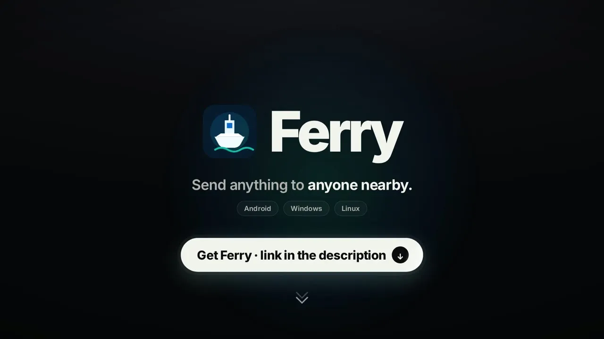

Finds devices by itself
Nearby Ferry devices show up by name. The receiver approves before anything arrives.
06 / 12Networking software
Send files and folders between your devices over the local network. Fast, verified and encrypted.
Ferry moves files between laptops and phones on the same network, with no internet in between. Devices find each other by name, a phone can make its own hotspot for others to join from a QR code, and every chunk of every file is checked before it is saved. Between paired devices the connection is encrypted and cannot be impersonated.
Nearby Ferry devices show up by name. The receiver approves before anything arrives.
Scan a code or compare six digits. Paired devices send without prompts and cannot be impersonated.
Every 16 MiB chunk and every whole file is checked with BLAKE3 before it is saved.
No router? A phone makes its own hotspot and others join by scanning a QR code.
Whole folders stream across, with safe paths and atomic replacement on Windows.
Conversations with files and messages, and sharing from any other app on Android.

For the technical reader: how it is put together.
Taking on new projects
Tell me what you need. I'll tell you honestly how I'd build it, how long it takes and what it costs.